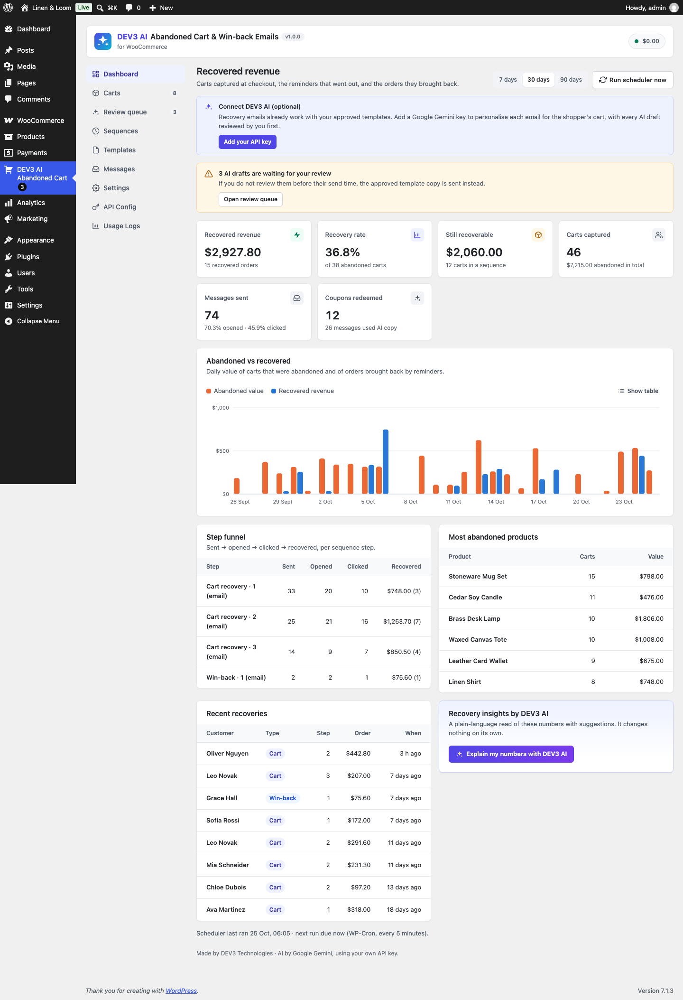
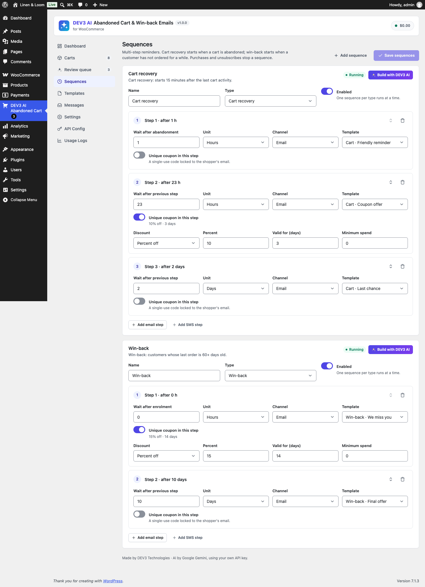
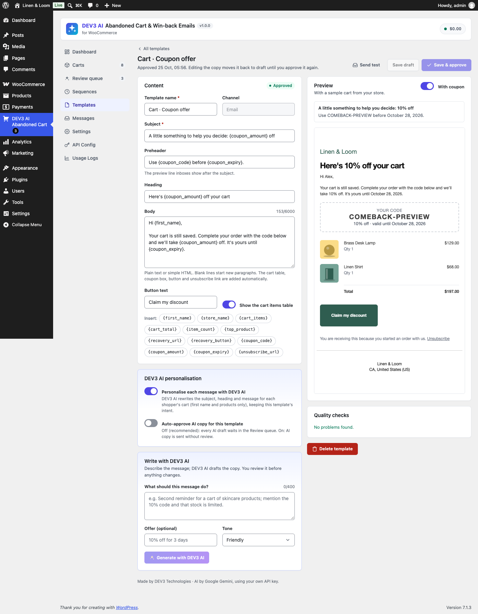
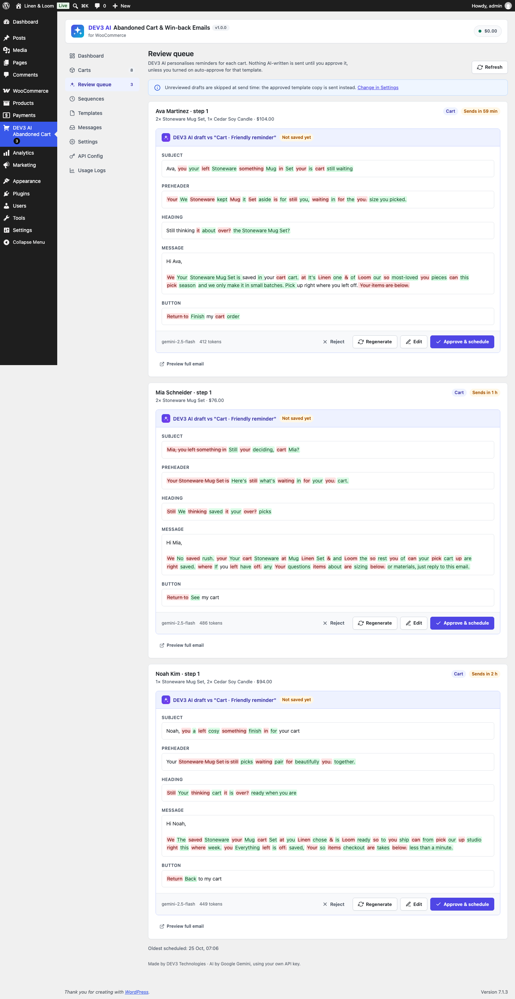
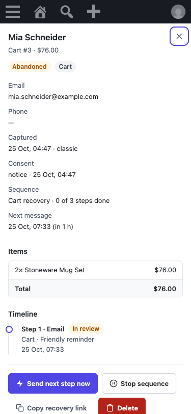

Installation
- Requirements: WordPress 6.0+, PHP 7.4+ (tested on 8.3), WooCommerce 8.0+.
- Plugins → Add New → Upload Plugin, choose
dev3-ai-abandoned-cart-for-woocommerce.zip, then Activate. - Open DEV3 AI Abandoned Cart in the admin menu. Two sequences (cart recovery and win-back) and six approved templates are ready to go.
- Check Settings → Capture & consent and Settings → Sending (from name/address). Make sure your site can send email (an SMTP plugin is recommended).
- The scheduler runs every 5 minutes with WP-Cron. On low-traffic sites, set a real cron job that calls
wp-cron.php, or press Run scheduler now on the dashboard.

Google Gemini API key (optional)
- Go to Google AI Studio and create an API key.
- Paste it in API Config and click Validate. The key is stored encrypted and never sent to the browser. You can also define
DEV3AC_GEMINI_API_KEYinwp-config.php. - Choose models (defaults: gemini-2.5-flash and gemini-2.5-pro), an optional monthly budget, and the AI on/off switch.
Without a key every recovery feature works with your approved templates.
Cart capture & consent
- Classic checkout: the email/phone/name fields are captured shortly after the shopper types them.
- Block checkout: captured through the Store API (no script needed) plus the same field listener for consent and timezone.
- Logged-in customers: carts are linked to the account email when the cart changes.
- Save my cart: add the "Save my cart" block or
[dev3ac_save_cart title="" text="" button=""]to the cart page; shoppers email themselves a cart link. - A cart counts as abandoned after Abandoned after (minutes) without activity (default 15). Minimum cart value and excluded roles are available.
| Consent mode | Behaviour |
|---|---|
| Notice (default) | A short note under the email field explains that the cart is saved for reminders. |
| Opt-in | A checkbox (classic and block checkout). Nothing personal is stored until it is ticked; unticking deletes the stored cart. Win-back reaches only customers who opted in. |
| None | No notice (for stores outside GDPR regions). |
SMS always needs its own opt-in checkbox. Every email has an unsubscribe link and List-Unsubscribe headers; unsubscribed emails/phones are stored as hashes and never contacted again.
Sequences
Each sequence has up to 10 steps: delay (from abandonment for step 1, then from the previous step), channel, template, optional unique coupon and minimum cart value. One sequence per type runs at a time. Purchases, unsubscribes and the admin's Stop action end a sequence; after the last step and Mark lost after days the cart is marked lost. Steps whose template is not approved, or SMS steps without consent/provider, are skipped and logged.

Templates
Email templates have subject, preheader, heading, body and button. The cart table, coupon box, button and unsubscribe footer are added automatically, inside your WooCommerce email design. SMS templates have one text field.
Merge tags: {first_name} {store_name} {cart_items} {cart_total} {item_count} {top_product} {recovery_url} {recovery_button} {coupon_code} {coupon_amount} {coupon_expiry} {unsubscribe_url}.
Only approved templates send. Editing the copy of an approved template moves it back to draft. Quality checks flag empty fields, long subjects, ALL CAPS, "!!!", spam words and missing links. Use Send test for a real email/SMS with a sample cart.

DEV3 AI features
| Feature | Where | What changes |
|---|---|---|
| Per-cart personalised copy | Template → "Personalise each message with DEV3 AI" | A draft per message; it waits in the Review queue unless the template has auto-approve on. |
| Write with DEV3 AI | Template editor | A draft (plus subject ideas) you can apply to the editor; you still save and approve. |
| Build with DEV3 AI | Sequences | Suggested steps with reasons; applied only when you click Apply and Save. |
| Send-time insights | Settings → Sending & timing | Suggested best hours, quiet hours and max shift; saved only when you accept. |
| Recovery insights | Dashboard | Read-only findings and actions. |
Per-cart copy runs in the scheduler, up to AI drafts per scheduler run (default 5). AI never runs on the storefront.
Review queue
Each AI draft is shown next to the template copy (filled in for that shopper) with a word diff. Approve (optionally after editing), reject (the template copy is sent) or regenerate. If a draft is still waiting at its send time:
- Send template copy (default): the approved template copy is sent on time.
- Hold: the message waits up to N hours for your review, then the template copy is sent.

Recovery coupons
When a step has a coupon, a unique WooCommerce coupon is created for that cart and step: percent, fixed amount or free shipping, single use, individual use, restricted to the shopper's email, with an expiry and optional minimum spend. Later steps without their own coupon reuse the latest valid one in merge tags. The recovery link applies it automatically. Expired, unused codes are deleted daily (setting).
Send-time tuning
Sends are only moved later, never earlier, within Max shift hours, to the hour with the best score: 3 × the shopper's own past order hours + 2 × their open/click hours + store-wide click hours + your preferred hours. Quiet hours use the shopper's browser timezone when known. The first cart reminder (due within 2 hours) moves at most 1 hour.
SMS
Settings → SMS: API base URL (Twilio: https://api.twilio.com/2010-04-01; any Twilio-compatible API works), Account SID, Auth token (stored encrypted), From number or Messaging Service SID. Numbers are normalised to E.164 using the billing country. "Reply STOP to opt out." is appended when missing.
Win-back
Hourly, customers whose last paid order is between Inactive for and Inactive for + look-back window days old are enrolled once into the win-back sequence (unless they unsubscribed or have an open cart sequence). Their last order's items are ready to re-order through the recovery link.
Dashboard, carts and messages
The dashboard shows recovered revenue, recovery rate, still-recoverable value, captured carts, messages, opens/clicks and coupon redemptions, a daily abandoned vs recovered chart (with a table view), the per-step funnel, top abandoned products and recent recoveries. A cart is recovered when its order reaches processing/completed after a reminder was sent or the link was clicked; otherwise it is "bought anyway". The Carts screen lists every cart with a detail drawer (items, consent, timeline, actions: send next step now, stop, restart, copy link, delete). Messages lists every send with its copy source.

Privacy & GDPR
- Personal data exporter and eraser (Tools → Export/Erase Personal Data) for carts and messages.
- Finished carts and their messages are deleted after Delete carts after days (default 90).
- A privacy-policy paragraph is added to Settings → Privacy.
- Google Gemini receives only the first name, product names/categories, cart total, offer and template copy. Emails and phone numbers are never sent.
Hooks for developers
| Hook | Type | Use |
|---|---|---|
dev3ac_capture_allowed( $allowed, $data ) | filter | Block capture for some visitors. |
dev3ac_cart_items( $items ) | filter | Change captured items. |
dev3ac_merge_tags( $tags, $cart, $message_id, $format ) | filter | Add or change merge tags. |
dev3ac_email_args( $args ) | filter | Change an outgoing email (to, subject, html, headers). |
dev3ac_sms_request( $request, $to ) | filter | Change the SMS HTTP request (other gateways). |
dev3ac_coupon_args( $args, $cart, $step ) | filter | Change recovery coupons. |
dev3ac_best_send_time( $ts, $cart, $step ) | filter | Override send-time tuning. |
dev3ac_winback_days( $days ) | filter | Inactivity days for win-back. |
dev3ac_recovery_redirect( $url, $cart ) | filter | Where recovery links land. |
dev3ac_sweep_batch( $limit ) | filter | Messages sent per scheduler run. |
dev3ac_prompt_cart_copy (and other prompt ids) | filter | Override AI prompt templates. |
dev3ac_cart_abandoned( $cart ) | action | A cart was marked abandoned. |
dev3ac_message_sent( $message, $cart ) | action | A reminder was sent. |
dev3ac_cart_recovered( $cart, $order ) | action | A cart or win-back turned into a paid order. |
dev3ac_unsubscribed( $value ) | action | An email/phone unsubscribed. |
REST API: dev3ac/v1 (admin routes need manage_options and a REST nonce): bootstrap, config, dashboard, carts, messages, review, sequences, templates, sweep, ai/*. Public: capture and save-cart (same-origin, rate limited, return no personal data) and the signed open pixel t/o.
FAQ
Will AI text ever be sent without a human?
Only for templates where you switched on "Auto-approve AI copy". Otherwise AI drafts wait for your approval and the approved template copy is the fallback.
Reminders are not going out.
Check that the template is approved, sending is on, and WP-Cron runs (Dashboard shows the last run). Use "Run scheduler now" to test, and check Messages for skipped/failed reasons.
Does page caching break capture?
No. The capture endpoint needs no nonce for guests and is protected by same-origin checks and rate limits.
Which currency is shown on the dashboard?
The store currency; carts in other currencies are counted at face value.
Where is the data stored?
In two custom tables (wp_dev3ac_carts, wp_dev3ac_messages) and options. Enable "Delete all plugin data on uninstall" to remove everything when deleting the plugin.
Changelog
1.0.0 – Initial release.